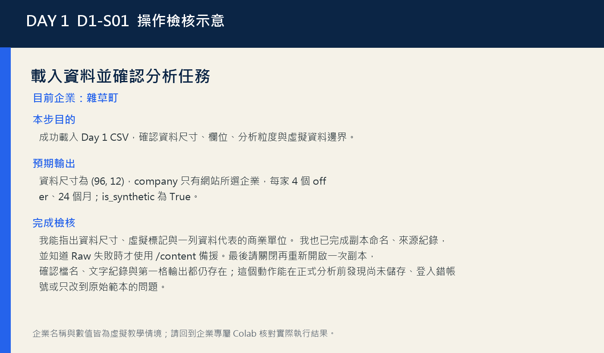
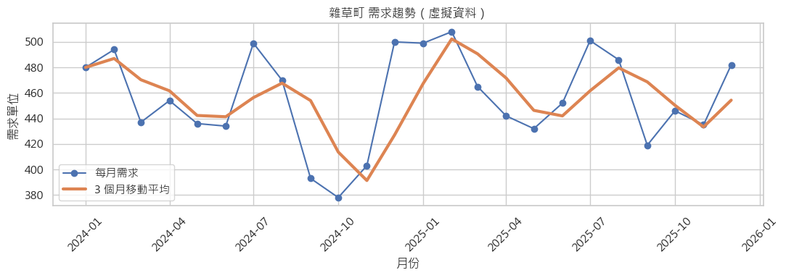
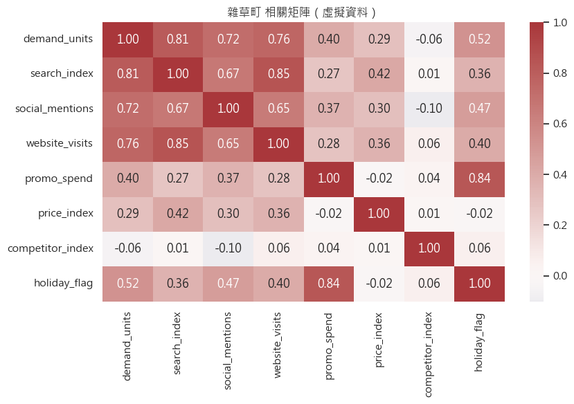
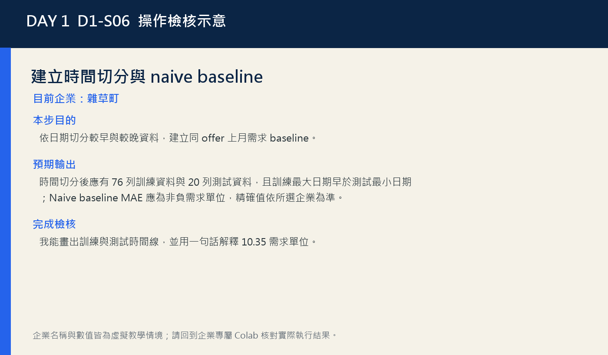

雜草町｜DAY 1
估計四項體驗與服務的近期需求，決定備料與人力緩衝。
分析對象：老宅夜間工藝等四項體驗方案的 24 個月市場訊號與需求。
資料線索：先用上月需求做基準，再判斷市場訊號模型是否真的降低測試期誤差。
今日交付：雜草町需求預測決策卡
DAY 1 / 4
從市場訊號、時間切分到可驗證的需求決策
之後仍可切換；選擇只保存在這個瀏覽器。
雜草町｜Day 1 專屬下載
義大開發｜Day 1 專屬下載
盛香珍 × 亙美質珍｜Day 1 專屬下載
寶島眼鏡｜Day 1 專屬下載
當日驗收將於 7/13 16:30（台灣時間）開放。
16:30 開放Selected enterprise
切換上方企業後，本任務、故事、圖表與下載資源會同步更新。
雜草町｜DAY 1
分析對象：老宅夜間工藝等四項體驗方案的 24 個月市場訊號與需求。
資料線索：先用上月需求做基準，再判斷市場訊號模型是否真的降低測試期誤差。
今日交付：雜草町需求預測決策卡
義大開發｜DAY 1
分析對象：三天兩夜深度假期等四項方案的市場訊號與月需求。
資料線索：不同方案量級大，模型評估要在相同測試期間與相同需求單位比較。
今日交付：義大開發需求預測決策卡
盛香珍 × 亙美質珍｜DAY 1
分析對象：跨界聯名禮盒等四項商品的兩年月需求與市場訊號。
資料線索：需求單位較大時，除了看 MAE，也要回到實際備貨量與缺貨成本。
今日交付：盛香珍 × 亙美質珍需求預測決策卡
寶島眼鏡｜DAY 1
分析對象：智慧門市會員方案等四項服務的市場訊號與月需求。
資料線索：情境預測若方向反直覺，應先檢查資料與模型，不可直接解讀為因果。
今日交付：寶島眼鏡需求預測決策卡
Business story
主要情境會依上方選擇切換；四家企業共通的分析方法可展開查閱。
雜草町
雜草町需要在下一波活動前確認四項體驗方案的備料與排班。你將使用網站綁定的雜草町虛擬資料，依時間切分比較上月需求基準與迴歸模型，最後提出可回測的準備量與風險說明。
義大開發
義大開發必須在檔期前決定住房、票務與現場服務的準備量。你將使用義大開發專屬虛擬資料，以時間順序保留未見月份，先建立簡單基準，再判斷迴歸模型是否足以支援小規模容量規劃。
盛香珍 × 亙美質珍
盛香珍 × 亙美質珍準備推出聯名與常態商品檔期，需要提前決定生產和包材。你將用專屬虛擬資料比較上月需求基準與迴歸預測，並把誤差換成可溝通的備貨緩衝與回測計畫。
寶島眼鏡
寶島眼鏡需要為門市活動與會員服務安排人力，但不同月份和方案的需求波動不一。你會用寶島眼鏡專屬虛擬資料建立時間切分與基準，再用模型誤差決定建議範圍和後續門市測試。
Learning goals
能先定義決策、分析單位與需求目標，再選擇分析方法。
能檢查日期、缺失、重複與虛擬資料標記，並說明補值邊界。
能以描述統計、趨勢圖與相關矩陣提出保守的市場觀察。
能依時間先後建立訓練集、測試集與上一期需求 baseline。
能用 MAE、RMSE、R² 比較 baseline 與線性迴歸。
能把模型結果翻譯成含誤差、限制及下一步驗證的企業決策卡。
520-minute route
依 D1-S01 個人操作並完成：我能指出資料尺寸、虛擬標記與一列資料代表的商業單位。 我也已完成副本命名、來源紀錄，並知道 Raw 失敗時才使用 /content 備援。最後請關閉再重新開啟一次副本，確認檔名、文字紀錄與第一格輸出都仍存在；這個動作能在正式分析前發現尚未儲存、登入錯帳號或只改到原始範本的問題。
依 D1-S02 個人操作並完成：我能說出兩個缺失欄、補值群組、重複主鍵與為何不補 demand_units。
離開螢幕、補水並確認下一段 Cell ID。
依 D1-S03 個人操作並完成：我能用平均需求與標準差描述兩個不同面向，並正確確認企業綁定。
依 D1-S04 個人操作並完成：我能分辨原始值與移動平均，並用三個具體月份描述趨勢。
整理目前輸出，下一段再繼續操作。
依 D1-S05 個人操作並完成：我能引用兩個相關值，並提出至少一個不把相關寫成因果的解釋。
午餐與休息；請保留已儲存的 Colab 副本。
依 D1-S06 個人操作並完成：我能畫出訓練與測試時間線，並用一句話解釋 10.35 需求單位。
依 D1-S07 個人操作並完成：我能畫出 Pipeline 資料流，並指出只有訓練資料可以 fit 前處理。
讓眼睛與注意力休息，再進入後續分析。
依 D1-S08 個人操作並完成：我能用三個指標與原單位說明哪個方法較佳，也能說出一項評估限制。
依 D1-S09 個人操作並完成：我能說明四列變化是模型敏感度，不是搜尋提升的因果承諾。
依 D1-S10 個人操作並完成：我已備妥可重跑 Notebook、核心輸出與短摘要草稿，並知道 17:00 後的作答、實作與送出順序。
個人完成 10 題當日概念與輸出判讀題。
使用網站所選企業的專屬 Notebook 完成實作與決策摘要。
確認分享權限、貼上 Colab 網址與摘要後個別送出。
Follow along
從上到下完成。每一步都包含輸入、操作、預期輸出、解讀與檢核。
Student step
成功載入 Day 1 CSV，確認資料尺寸、欄位、分析粒度與虛擬資料邊界。
Day 1 Notebook → [D1-S01] 載入資料並確認分析任務
從課程網站按下「在 Colab 開啟」，登入 Google 帳號後選擇「檔案 → 在雲端硬碟中儲存副本」。
找到 [D1-S01] 儲存格，先閱讀上方目的與資料來源說明。
直接按儲存格左側播放鍵；Notebook 會優先從 GitHub Raw 讀取公開虛擬 CSV。
若網路讀取失敗，才從網站下載目前企業卡片的專屬 CSV，再上傳到 Colab /content。
在輸出區核對資料來源、資料尺寸、前三列與 is_synthetic=True。
把資料粒度寫成一句完整句子：一列代表哪一家公司、哪個對象、哪個時間單位。
把目前 Colab 副本重新命名為「DayX_姓名_企業名稱」，確認右上角顯示已儲存到雲端硬碟。
在本段下方新增一個文字儲存格，記錄資料來源、執行日期與你負責的企業，作為後續分析稽核線索。
企業已由網站卡片綁定，ENTERPRISE_NAME 已由企業專屬 Notebook 綁定，不需也不應手動變更；若需改用另一企業，請回網站開啟對應的專屬 Notebook。
執行本段唯一程式碼儲存格；看到資料預覽與虛擬標記後才進入下一段。
資料尺寸為 (96, 12)，company 只有網站所選企業，每家 4 個 offer、24 個月；is_synthetic 為 True。
96 列來自目前企業的 4 個 offer 各 24 個月。列數與結構對不起來時就先停止；對得起來仍要繼續檢查日期、缺失、重複與極端值。
FileNotFoundError：找不到 day-1-{enterprise-id}-market-demand.csv
CSV 尚未上傳，或瀏覽器替重複下載檔加上 (1)。
刪除錯名檔，重新上傳並確認左側檔名完全一致，再重跑本格。
資料尺寸不是 (96, 12)
上傳了其他天資料、Excel 檔或曾手動修改 CSV。
回網站重新下載 Day 1 原始 CSV，重啟執行階段後由第一格重跑。
我能指出資料尺寸、虛擬標記與一列資料代表的商業單位。 我也已完成副本命名、來源紀錄，並知道 Raw 失敗時才使用 /content 備援。最後請關閉再重新開啟一次副本，確認檔名、文字紀錄與第一格輸出都仍存在；這個動作能在正式分析前發現尚未儲存、登入錯帳號或只改到原始範本的問題。

Student step
建立資料品質報告，辨識可補值特徵與不可任意補造的需求目標。
Day 1 Notebook → 2. 檢查虛擬資料與資料品質
先確認上一段 df 已存在，再執行品質檢查儲存格。
讀取日期範圍，確認從 2024-01-01 到 2025-12-01，共 24 個月份。
在 quality_report 找出 social_mentions 與 website_visits 各 4 筆缺失。
確認 demand_units 沒有缺失，duplicate_count 為 0。
閱讀補值迴圈，指出它是在公司內使用中位數，而不是全資料平均數。
在 D1-S02 下方的「個人分析紀錄」Colab 文字儲存格，分開寫出『原始缺失』與『處理後檢核』，不要把補值後的 0 誤寫成原本沒有缺失。
本段不修改欄位清單；先依 Notebook 規則只補 social_mentions 與 website_visits。
執行品質檢查格；如重跑多次，原始 quality_report 可能已反映前次補值，應重啟並由第一格重跑以重現原始狀態。
日期範圍 2024-01-01 至 2025-12-01；重複主鍵 0；social_mentions 缺 4、website_visits 缺 4；demand_units 缺 0。
特徵缺失可以在明確規則下補值，但需求目標若缺失，隨意補造會把人為目標值帶進模型。公司內中位數比全體平均更能保留各企業量級，但它仍是一項假設，正式分析應記錄缺失原因並做敏感度檢查。
NameError：df is not defined
跳過第一段或執行階段剛重新啟動。
從第一段重新執行，確認資料載入完成後再跑品質檢查。
重跑後 quality_report 顯示缺失為 0
同一執行階段中已經完成補值，df 被改寫。
選擇『執行階段 → 重新啟動工作階段』，由上到下重跑一次並記錄第一次輸出。
我能說出兩個缺失欄、補值群組、重複主鍵與為何不補 demand_units。
Student step
以單一企業為範圍，比較 offer 的平均需求、波動、搜尋熱度與促銷投入。
Day 1 Notebook → 3. 確認綁定企業並建立描述統計
核對 Notebook 顯示的企業名稱與網站卡片一致，並確認 company 唯一值為目前企業。
確認企業已由 Notebook 綁定，不修改企業參數、欄位名稱或篩選條件。
執行後確認 company_df 非空，而且只剩一家公司。
在 offer_summary 確認每個 offer 的 months 都是 24。
比較 mean_demand 與 demand_std，分別標記高需求及高波動項目。
再查看 mean_search 與 total_promo，寫下一項值得追問而非直接下因果結論的現象。
企業已由網站卡片綁定，ENTERPRISE_NAME 已由企業專屬 Notebook 綁定，不需也不應手動變更；若需改用另一企業，請回網站開啟對應的專屬 Notebook。
確認企業綁定後執行本格；改用另一企業 Notebook 時需由本格開始重新執行後續所有格。
企業摘要表應只有網站所選企業的 4 個 offer，每項各 24 個月，並列出平均需求、需求標準差、平均搜尋指數與促銷總額。精確排序與數值依企業專屬 Notebook 為準。
平均需求回答典型量級，標準差回答月度波動；兩者必須一起看。高平均但高波動的方案可能需要彈性排班，小幅平均但穩定的方案可能適合固定供給。促銷總額與需求同時高只能形成追問，不能證明促銷造成需求。
AssertionError：企業名稱不正確
手動輸入多空格、使用簡稱或少了 X。
從『可選企業』輸出清單直接複製名稱，保留引號後重跑。
網站所選企業與 Notebook 顯示不一致
開啟了另一企業的 Notebook，或上傳了不相符的 CSV。
停止執行，回網站開啟正確企業的專屬 Notebook；必要時重新下載同一企業 CSV，再重新啟動工作階段並全部執行。
我能用平均需求與標準差描述兩個不同面向，並正確確認企業綁定。
Student step
辨識原始月需求、平滑趨勢與短期波動，避免只靠平均值做決策。
Day 1 Notebook → 4. 畫出月需求與移動平均
確認 company_df 已是目前企業，再執行月彙總與繪圖儲存格。
在圖例分辨 Monthly demand 與 3-month moving average。
檢查 x 軸日期按先後排列，沒有被當成文字亂序。
從最近六個月表找出最高、最低與最後一個月需求。
比較原始線與移動平均，圈出至少一個短期尖峰被平滑的月份。
寫下趨勢、波動及一項仍不能證明的原因，避免把折線圖當成因果證據。
可在延伸練習把 rolling(3) 改成 rolling(6) 比較平滑程度；正式提交版本保留三月版本。
執行後等待圖形與最近六個月表格都完成；只看到警告但有圖表時仍可繼續。
產生所選企業的月需求折線、3 個月移動平均與最近 6 個月表格；日期應由早到晚，移動平均前兩期可為空值。高低點與精確數字依專屬圖表為準。
原始月需求保留短期波動，三月移動平均提供較平滑方向。移動平均會延遲反映轉折，不能拿來證明節慶或促銷造成變化。若需求在某月上升，應回到 offer、搜尋、價格及活動資料尋找可驗證假設。
圖表中文出現方框或 Glyph missing 警告
執行環境預設字型缺少中文字形。
本課圖軸主要使用英文，可先忽略警告；若標題需中文，由網站提供的字型設定格處理，不要刪除資料。
折線日期順序混亂
date 未轉為 datetime，或跳過品質檢查格。
回到第二段執行 pd.to_datetime，再確認 monthly 已 sort_values('date')。
我能分辨原始值與移動平均，並用三個具體月份描述趨勢。

Student step
讀懂相關排序與熱圖，使用關聯語言形成可驗證假設。
Day 1 Notebook → 5. 檢查數值關聯
執行相關矩陣儲存格，先看 demand_units 的相關排序，再看完整熱圖。
找出正相關最高、負相關最低及接近零的指標。
核對相關值介於 -1 與 1，對角線為 1。
使用『在此虛擬資料中呈正／負關聯』句型描述兩項結果。
為最高相關指標列出至少一個可能混淆因素或反向關係。
把『提高搜尋一定增加需求』改寫成可被後續實驗驗證的假設。
numeric_cols 維持 Notebook 原設定；不要把文字欄位或未來 demand_units 複製值加入。
執行後應先出現相關排序表，再顯示熱圖與固定非因果句型。
輸出所選企業的需求相關排序與相關矩陣，係數均應介於 -1 與 1。請記錄與需求絕對關聯較高的 2–3 個欄位；方向與數值依專屬 Notebook 為準。
相關係數描述兩變數共同變動方向與線性程度，不控制其他條件，也不能排除需求反過來帶動搜尋、旺季同時推升兩者，或促銷共同影響。高相關可協助選擇後續預測特徵與實驗假設，但不能直接成為加碼理由。
ValueError：could not convert string to float
自行把 company 或 offer 等文字欄位放入 corr。
恢復 numeric_cols，只保留數值欄位後重跑。
熱圖太小或註記重疊
瀏覽器縮放過小或自行加入過多欄位。
恢復 figsize=(9, 6) 與原始欄位；使用瀏覽器 100% 縮放。
我能引用兩個相關值，並提出至少一個不把相關寫成因果的解釋。

Student step
依日期切分較早與較晚資料，建立同 offer 上月需求 baseline。
Day 1 Notebook → 6. 建立時間切分與簡單基準
執行前確認 model_df 依 date、offer 排序。
閱讀 groupby('offer').shift(1)，說明每個 offer 使用自己的上一月需求。
檢查 cutoff_date 由 24 個月份的 80% 位置產生。
執行後記錄切分日期、訓練筆數、測試筆數與 naive MAE。
確認 train_df 最大日期早於 test_df 最小日期，沒有隨機打散。
用需求單位解釋 MAE，而不是把它誤寫成百分比。
本課固定使用 80% 時間位置切分；不要改成 train_test_split 隨機切分。
執行本格後保留 cutoff_date、train_df、test_df，供後續模型共用。
時間切分後應有 76 列訓練資料與 20 列測試資料，且訓練最大日期早於測試最小日期；Naive baseline MAE 應為非負需求單位，精確值依所選企業為準。
baseline 回答『只用同一 offer 上月需求，平均會錯多少』。MAE 必須以需求單位解讀；後續模型要在完全相同的 20 列測試資料上比較，才能判斷增加複雜度是否值得。
測試資料出現 naive_prediction 缺失
每個 offer 第一個月份沒有上一月值，或排序／個人操作錯誤。
確認先按 date、offer 排序並以 offer 個人操作 shift；測試集再 dropna。
切分日期或筆數與預期差很多
前面篩選企業失敗、日期未轉型或自行刪除資料。
檢查 company_df 只有一家企業且 96 列，再由日期轉型段依序重跑。
我能畫出訓練與測試時間線，並用一句話解釋 10.35 需求單位。

Student step
理解數值補值、標準化、類別編碼與模型 fit 的資料邊界。
Day 1 Notebook → 7. 建立可解釋的線性迴歸 baseline
閱讀 numeric_features 與 categorical_features，確認 demand_units 不在特徵中。
在紙上畫出數值欄經 SimpleImputer、StandardScaler，offer 經 OneHotEncoder 的兩條路徑。
確認 ColumnTransformer 與 LinearRegression 被包在同一個 Pipeline。
檢查 X_train、y_train、X_test、y_test 都從先前時間切分取得。
執行 model.fit(X_train, y_train)，等待顯示模型完成訓練。
確認預測只套用 X_test，且負預測以零作教學邊界處理。
本段不增刪特徵；延伸實驗須另存副本，避免把未來需求或測試期需求值加入特徵。
執行本格一次；企業已綁定，若需改用另一企業，請回網站重新開啟對應 Notebook；請確認 ENTERPRISE_NAME 與網站所選企業一致，並從企業綁定檢核到本格全部重跑。
輸出『模型已完成訓練。』；test_df 新增 model_prediction，筆數維持 20，預測值皆不小於 0。
Pipeline 的價值是讓補值、標準化、類別編碼只在訓練資料 fit，再以相同規則 transform 測試資料，降低資料洩漏與人工步驟遺漏。線性迴歸是可解釋 baseline，不代表真實關係一定線性或係數具有因果意義。
KeyError：某個 feature 欄位不存在
前面改了欄位名或使用錯誤 CSV。
比對 Day 1 的 12 欄，恢復原始 numeric_features 後由第一段重跑。
Found input variables with inconsistent numbers of samples
X 與 y 來自不同篩選或手動刪列。
不要手動改 train_df/test_df；重新執行時間切分並從同一 DataFrame 建立 X、y。
我能畫出 Pipeline 資料流，並指出只有訓練資料可以 fit 前處理。
Student step
正確解讀 MAE、RMSE、R² 與實際值－預測值圖，選出較佳方法。
Day 1 Notebook → 8. 比較模型與 baseline
執行 metrics 儲存格，確認兩個方法使用同一個 y_test。
記錄 Naive 與 Linear regression 的 MAE、RMSE、R²。
先以 MAE 判斷平均誤差，再看 RMSE 是否顯示較大的偶發錯誤。
解讀 R² 時允許負值，不得把 R² 當準確率。
查看實際、naive、model 三條月線，找出偏差最大月份。
用『方法＋指標＋單位＋決策』四元素寫出模型選擇句。
本段不更換測試集或指標；所有模型必須在相同 test_df 比較。
執行後先看兩列表格，再看月彙總折線圖；保留圖供實作題使用。
模型比較表應有 Naive baseline 與 Linear regression 兩列，並同時顯示 MAE、RMSE、R²；另有測試期實際值與預測值圖。請以較低 MAE／RMSE 判讀，精確值依企業專屬輸出為準。
先比較兩個方法在相同測試資料的 MAE 與 RMSE，再用 R² 補充說明。請寫出較佳方法、改善多少需求單位及測試期間限制；即使模型較佳，也不能把虛擬小樣本結果當成正式預測承諾。
R² 顯示負值而以為程式錯誤
模型在測試集可能比使用測試平均值還差，負值是合法結果。
同時檢查 MAE、RMSE 與預測圖；不要手動把負值改成零。
兩個方法筆數不同或 metrics 報長度錯誤
自行刪除 test_df 列或 naive 缺失未在切分段處理。
重新執行時間切分，確保兩個預測都與同一 y_test 對齊。
我能用三個指標與原單位說明哪個方法較佳，也能說出一項評估限制。

Student step
只改變搜尋熱度一項假設，區分模型敏感度、預測與因果效果。
Day 1 Notebook → 9. 進行透明的市場訊號情境模擬
執行前確認 latest 每個 offer 只保留最新一月一列。
閱讀 base_pred，確認它使用未修改的最新資料。
確認 scenario 只把 search_index 乘以 1.10，並以 100 為上限。
執行後比較每個 offer 的 base_prediction、情境預測與 prediction_change。
確認 warning 欄仍是『虛擬關聯情境；不是因果效果』。
用敏感度語言寫結論，並提出能驗證搜尋增量效果的下一步。
預設情境為 search_index +10%；延伸可改成 +5% 或 -10%，但一次只改一項假設並保留上限。
執行本格產生四列 scenario_result；若需改用另一企業，請回網站開啟對應 Notebook；之後，須先重跑企業篩選至模型訓練。
情境表應保留 4 個 offer，包含基準預測、搜尋指數增加 10% 後的情境預測與兩者差額。差額可正可負，精確方向與幅度依所選企業模型為準。
結果表示線性模型對搜尋指數增加 10% 的條件敏感度，不表示實際操作能讓搜尋上升，也不表示搜尋上升會造成同幅需求。情境分析的價值是透明呈現假設與模型反應，供小規模測試、風險討論與資料蒐集排序使用。
NameError：model is not defined
跳過線性迴歸訓練，或執行階段已重啟。
從企業篩選、時間切分到模型訓練依序重跑，再執行情境。
prediction_change 全為 0 或極端大
搜尋值已達上限、修改了錯誤欄位或前處理／模型狀態不同。
恢復只改 search_index ×1.10，核對 latest 搜尋值與 scenario 上限，再重跑。
我能說明四列變化是模型敏感度，不是搜尋提升的因果承諾。
Student step
17:00 前只備妥個人需求預測決策卡草稿、完成 Run All 與繳交前檢核；正式選擇題、實作與提交依 17:00 後時程進行。
Day 1 Notebook → D1-S10 個人成果整理與繳交前檢核
重新啟動執行階段並 Run All，確認企業專屬 Notebook 可從頭重建。
核對自動產生的核心圖表、表格與輸出檔，不手動塗改數值。
依當日實作題先備妥參數調整、核心輸出判讀與短摘要草稿。
確認 Google Form 作答入口可開啟，但 17:00 前不開始作答、不送出。
檢查 Colab 分享權限、檔名、企業名稱與資料版本，將問題記錄下來。
此段不改模型主線；只核對企業綁定、輸出檔與稍後實作需調整的 1–2 項參數。
執行 Restart and Run All 與輸出檢核；17:00 前只備妥草稿，不送出正式成果。
所有核心圖表、表格與輸出檔都能由乾淨執行階段重建，個人摘要草稿已備妥。
此時是繳交前的品質檢核，不是提前驗收。17:00–17:20 完成選擇題，17:20–18:40 完成個人實作，18:40–19:00 設定分享與送出。 Colab 初學者可以用『一段一段』的方式檢查：先看儲存格左側是否出現綠色勾選，再看最後一行輸出是否符合講義的合理範圍，最後才寫下這個數字對決策的意義。若看到紅字，不要連續重按執行；請先複製最後一行錯誤訊息，回到對應 Cell ID 檢查檔名、參數與執行順序。你不需要記住所有程式，但要能說清楚自己調了什麼、輸出怎麼變、以及目前仍不能下什麼結論。
outputs 資料夾沒有 CSV
尚未執行決策卡格，或瀏覽器檔案區未重新整理。
重跑最後一格，按左側檔案區重新整理，展開 outputs 後下載。
Restart and Run All 後結果不同或中途失敗
前面手動修改了非 TODO 程式、檔案未上傳，或執行順序依賴舊物件。
重新上傳原始 CSV、還原 Notebook 副本，不需修改企業參數，再完整重跑。
我已備妥可重跑 Notebook、核心輸出與短摘要草稿，並知道 17:00 後的作答、實作與送出順序。
教學設計與教材製作｜恩恩統計家教｜www.enentutor.com